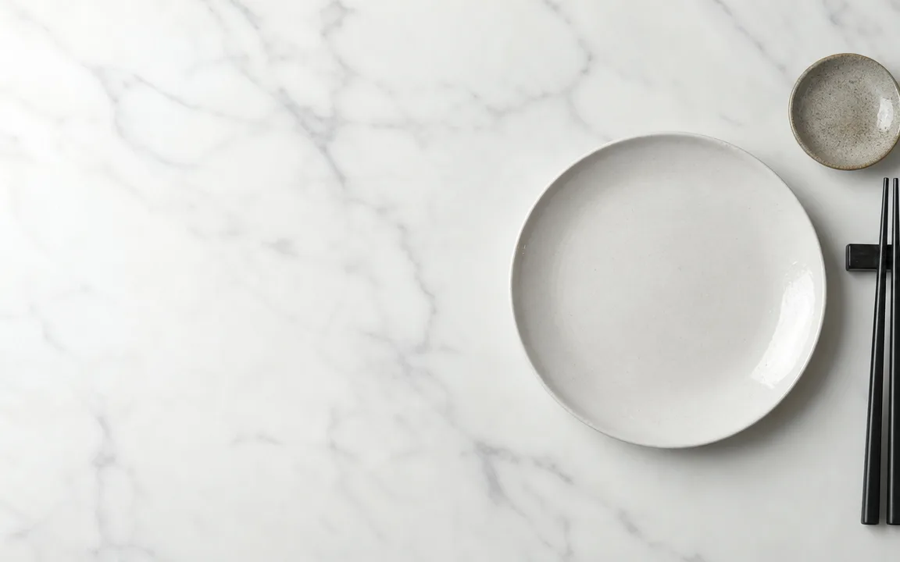

What you find at the counter
Everything you see here is included in the set price, drinks excluded, and you can go back for more as often as you like.
The counter changes every day. This is the list of what comes back most often, not a promise: some dishes depend on the market and not every evening has everything. If you are coming for something in particular, call us first.

No dish matches your search.
What it costs
The same menu, four price bands
Only the time of your visit changes the price. Drinks excluded, unlimited courses.
- Lunch / Mon–Fri
- €14.90per person
- Dinner / Mon–Fri
- €22.90per person
- Lunch / weekends and holidays
- €18.90per person
- Dinner / weekends and holidays
- €24.90per person
Children under 120 cm: €9.90 at lunch and €12.90 at dinner.
Decided where to start?